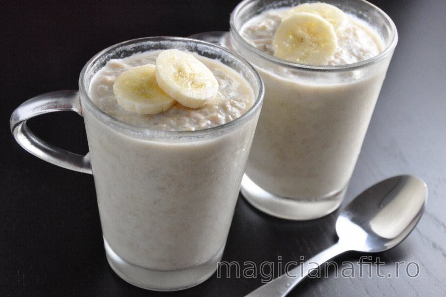

Budincă din banane şi nucă de cocos (fără zahăr, fără gluten)

Rețeta acestei budinci fitness cu un conținut ridicat de proteine este foarte simplă și ai nevoie de doar 4 ingrediente de bază - banane, lapte, nucă de cocos și ouă. Are un conținut de calorii relativ scăzut - o porție conține doar 160 de calorii. Dacă dorești, poți adăuga semințe de chia sau cacao pentru versiunea cu cacao. Dacă vrei să crești și mai mult conținutul de proteine, poți adăuga și pudră proteică după fierbere și poți schimba gustul budincii în funcție de aroma pe care o folosești.
Ingrediente
1 cană lapte
1 ou
2 linguri fulgi de cocos
1 lingură seminţe de chia (opţional)
1 banană
Instrucțiuni
Pasează banana cu o furculiţă într-un vas, adaugă oul şi laptele şi amestecă bine.
Foloseşte un blender dacă vrei ca budinca să fie mai moale.
Prepară amestecul la foc mediu, amestecând în mod constant.
Când este aproape gata, adaugă nuca de cocos şi amestecă până când budinca dă în clocot.
După ce iei budinca de pe foc, poţi adăuga şi seminţele de chia.
Toarnă budinca în boluri sau cupe şi serveşte-o fie caldă, fie rece.
Ţine-o la frigider şi consum-o în decurs de 2 zile.